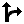

In Try It! mode and Do It! mode, you may have the opportunity to display alternative actions or paths within a topic. Alternative Actions are single actions that accomplish the same result as the primary action. Alternative Paths, on the other hand, guide the end users through alternate steps to accomplish the same task as the primary steps.
Note: Alternative Actions and Alternative Paths do not appear in See It! mode.
In Try It! mode, the Show Next Alternative Action icon appears in the bubble if an alternative action or path is available. Clicking this icon displays a separate bubble containing the alternative action or path.
 To view alternative actions in Try It! mode:
To view alternative actions in Try It! mode:
- Launch a topic in Try It! mode.
- When available, click Show next alternative action .
- Complete the action or start the path indicated in the bubble.
Note: You can also display an alternative action or path by clicking the Actions link in the Try It! bubble and then clicking the Show Next Alternative Action link.
In Do It! mode, if an alternative action or path is available, the Show Next Alternative Action icon appears in the Do It! window. When you click this icon, the Do It! window displays the appropriate step and screenshot for the alternative action or path.
To view alternative actions in Do It! mode:
- Launch a topic in Do It! mode.
- When available, click Show next alternative action .
- Complete the action or start the path indicated in the window.
Note: You can also display an alternative action or path by clicking the Actions link in the Do It! window and then clicking the Show next Alternative action link.